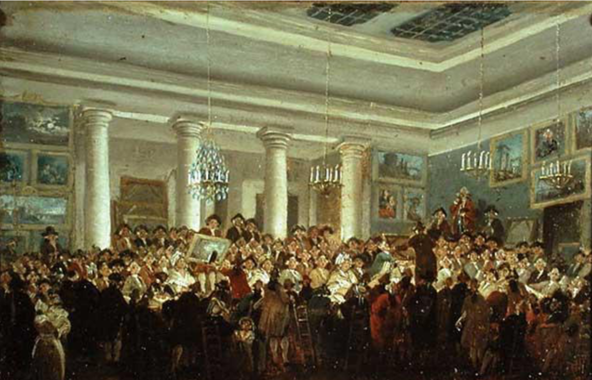

06-analysis
Intro to Data Analysis
Q&A
Q: What if we’re not good at coming up with ideas of what plots to generate from a given dataset?
A: We’re going to discuss this and practice this! If you’re not sure where to start, the DatatoViz resource is a great place to help with ideas! If you’re still struggling, be sure when we get to case studies to really think to yourself for each plot, why did prof choose this plot? Could another have been better? And, discuss with your teammates (once you have those)!
Q: maybe i missed it… but i am confused about the difference between “count” and “proportions”. Would they end up being the same thing? is the code different for doing count vs. proportion?
A: Another student had this question, and it’s a good one! Count is for the value across the dataset. Proportions are calculated within the group, such that each group’s values are displayed out of 100%. Happy to discuss more if there are questions. We’ll see an example of this in today’s lecture!
Q: Not the lecture, but the way to think in the way to get the “right” plot for the data.
A: So, the good news is that there isn’t typically one right way. There’s room for personalization, personal preferences, and sometimes, there’s just more than one way! The bad news is that it takes time to learn best practices…but that’s part of what this class is all about!
Q: Why is ChatGPT mentioned in the lab answers?
A: Because I assume that some students are using this as a resource. And, that’s great! It’s there so that you get a sense of ChatGPT’s strengths (sometimes it really does give helpful dplyr code or get you started on the right path) and its weaknesses (it’s still important to think critically if you’re choosing to use it as a tool!) ChatGPT is by no means required in this course. In fact, I think labs/assignments may take longer if you are using it. I don’t have a sense yet who would learn the material better!
Agenda
- Discuss Exploratory Data Analysis (EDA)
- Introduce modelling as a concept
- Paintings example
- EDA
- Modelling (Linear)
Course Announcements
Due Dates:
- Lab 04 due Friday (1/27; 11:59 PM)
- Lecture Participation survey “due” after class
- HW02 due Monday (2/6; 11:59 PM)
Notes:
- HW01 Grades (Canvas) & Feedback (GitHub Issue) Posted
- Lab03 Answer Key Posted
Exploratory Data Analysis (EDA)
What is EDA?
Exploratory data analysis (EDA) is an aproach to analyzing data sets to summarize and understand its main characteristics.
Often, this is visual….but the visuals do not have to be perfect. (Save that for communication)
Calculating summary statistics is also part of EDA.
- Data tidying/wrangling/manipulation/transformation typically happens before this stage of the analysis.
The Goal: KNOW YOUR DATA!
Consider: No. of variables involved
Univariate data analysis - distribution of single variable
Bivariate data analysis - relationship between two variables
Multivariate data analysis - relationship between many variables at once, usually focusing on the relationship between two while conditioning for others
Consider: Types of variables
Numerical variables can be classified as continuous or discrete based on whether or not the variable can take on an infinite number of values or only non-negative whole numbers, respectively.
If the variable is categorical, we can determine if it is ordinal based on whether or not the levels have a natural ordering.
Data visualization
“The simple graph has brought more information to the data analyst’s mind than any other device.” — John Tukey
Data visualization is the creation and study of the visual representation of data.
There are many tools for visualizing data (R is one of them), and many approaches/systems within R for making data visualizations (
ggplot2is what we’ll continue to use).EDA will involve making plots/visualizing your data
Data: Paris Paintings
Paris Paintings
pp <- read_csv("https://raw.githubusercontent.com/COGS137/datasets/main/paris_paintings.csv",
na = c("n/a", "", "NA"))- Source: Printed catalogs of 28 auction sales in Paris, 1764 - 1780
- Data curators Sandra van Ginhoven and Hilary Coe Cronheim (who were PhD students in the Duke Art, Law, and Markets Initiative at the time of putting together this dataset) translated and tabulated the catalogues
- 3393 paintings, their prices, and descriptive details from sales catalogues over 60 variables
Auctions today

Source: Sothebys
Auctions back in the day

Source: Pierre-Antoine de Machy, Public Sale at the Hôtel Bullion, Musée Carnavalet, Paris (18th century)
Paris auction market

Depart pour la chasse

Auction catalogue text

Two paintings very rich in composition, of a beautiful execution, and whose merit is very remarkable, each 17 inches 3 lines high, 23 inches wide; the first, painted on wood, comes from the Cabinet of Madame la Comtesse de Verrue; it represents a departure for the hunt: it shows in the front a child on a white horse, a man who gives the horn to gather the dogs, a falconer and other figures nicely distributed across the width of the painting; two horses drinking from a fountain; on the right in the corner a lovely country house topped by a terrace, on which people are at the table, others who play instruments; trees and fabriques pleasantly enrich the background.
Depart pour la chasse as Data


pp |>
filter(name == "R1777-89a") |>
glimpse()Rows: 1
Columns: 61
$ name <chr> "R1777-89a"
$ sale <chr> "R1777"
$ lot <chr> "89"
$ position <dbl> 0.3755274
$ dealer <chr> "R"
$ year <dbl> 1777
$ origin_author <chr> "D/FL"
$ origin_cat <chr> "D/FL"
$ school_pntg <chr> "D/FL"
$ diff_origin <dbl> 0
$ logprice <dbl> 8.575462
$ price <dbl> 5300
$ count <dbl> 1
$ subject <chr> "D\x8epart pour la chasse"
$ authorstandard <chr> "Wouwerman, Philips"
$ artistliving <dbl> 0
$ authorstyle <chr> NA
$ author <chr> "Philippe Wouwermans"
$ winningbidder <chr> "Langlier, Jacques for Poullain, Antoine"
$ winningbiddertype <chr> "DC"
$ endbuyer <chr> "C"
$ Interm <dbl> 1
$ type_intermed <chr> "D"
$ Height_in <dbl> 17.25
$ Width_in <dbl> 23
$ Surface_Rect <dbl> 396.75
$ Diam_in <dbl> NA
$ Surface_Rnd <dbl> NA
$ Shape <chr> "squ_rect"
$ Surface <dbl> 396.75
$ material <chr> "bois"
$ mat <chr> "b"
$ materialCat <chr> "wood"
$ quantity <dbl> 1
$ nfigures <dbl> 0
$ engraved <dbl> 0
$ original <dbl> 0
$ prevcoll <dbl> 1
$ othartist <dbl> 0
$ paired <dbl> 1
$ figures <dbl> 0
$ finished <dbl> 0
$ lrgfont <dbl> 0
$ relig <dbl> 0
$ landsALL <dbl> 1
$ lands_sc <dbl> 0
$ lands_elem <dbl> 1
$ lands_figs <dbl> 1
$ lands_ment <dbl> 0
$ arch <dbl> 1
$ mytho <dbl> 0
$ peasant <dbl> 0
$ othgenre <dbl> 0
$ singlefig <dbl> 0
$ portrait <dbl> 0
$ still_life <dbl> 0
$ discauth <dbl> 0
$ history <dbl> 0
$ allegory <dbl> 0
$ pastorale <dbl> 0
$ other <dbl> 0EDA: Paris Paintings
Visualizing numerical data
Describing shapes of numerical distributions
- shape:
- skewness: right-skewed, left-skewed, symmetric (skew is to the side of the longer tail)
- modality: unimodal, bimodal, multimodal, uniform
- center: mean (
mean), median (median), mode (not always useful) - spread: range (
range), standard deviation (sd), inter-quartile range (IQR) - unusual observations
Histograms
ggplot(data = pp, aes(x = Height_in)) +
geom_histogram(binwidth = 5) +
labs(x = "Height, in inches", y = NULL)
ggplot(data = pp, aes(x = Width_in)) +
geom_histogram(binwidth = 5) +
labs(x = "Width, in inches", y = NULL)
ggplot(data = pp, aes(x = price)) +
geom_histogram(binwidth = 100) +
labs(x = "Price", y = NULL)
Density plots
ggplot(data = pp, mapping = aes(x = Height_in)) +
geom_density()
Side-by-side box plots
ggplot(data = pp, mapping = aes(y = Height_in, x = as.factor(landsALL))) +
geom_boxplot()
Visualizing categorical data
- count/proportion of values
- unusual observations
Bar plots
ggplot(data = pp, mapping = aes(x = as.factor(landsALL))) +
geom_bar()
Segmented bar plots, counts
ggplot(data = pp, mapping = aes(x = as.factor(landsALL), fill = materialCat)) +
geom_bar()
Segmented bar plots, proportions
ggplot(data = pp, mapping = aes(x = as.factor(landsALL), fill = materialCat)) +
geom_bar(position = "fill") +
labs(y = "proportion")
Your Turn
❓ Which of the previous two bar plots is a more useful representation for visualizing the relationship between landscape and painting material?
❓ What else would you want to do/know to complete EDA?
🧠 Try to answer at least one thing you’d want to know from the dataset.
Put a green sticky on the front of your computer when you’re done. Put a pink if you want help/have a question.
Modelling
Modelling
Use models to explain the relationship between variables and to make predictions
For now we focus on linear models (but remember there are other types of models too!)
Packages


- You’re familiar with the tidyverse:
library(tidyverse)- The broom package takes the messy output of built-in functions in R, such as
lm, and turns them into tidy data frames.
library(broom)Modelling the relationship between variables
EDA: Prices
❗ Describe the distribution of prices of paintings.
ggplot(data = pp, aes(x = price)) +
geom_histogram(binwidth = 1000)
Models as functions
We can represent relationships between variables using functions
A function is a mathematical concept: the relationship between an output and one or more inputs.
- Plug in the inputs and receive back the output
- Example: the formula \(y = 3x + 7\) is a function with input \(x\) and output \(y\), when \(x\) is \(5\), the output \(y\) is \(22\)
y = 3 * 5 + 7 = 22
Height as a function of width
❗ Describe the relationship between height and width of paintings.

Visualizing the linear model
ggplot(data = pp, aes(x = Width_in, y = Height_in)) +
geom_point() +
geom_smooth(method = "lm") # lm for linear model
Visualizing the linear model
… without the measure of uncertainty around the line
ggplot(data = pp, aes(x = Width_in, y = Height_in)) +
geom_point() +
geom_smooth(method = "lm", se = FALSE) # lm for linear model
Visualizing the linear model
… with different cosmetic choices for the line
ggplot(data = pp, aes(x = Width_in, y = Height_in)) +
geom_point() +
geom_smooth(method = "lm", se = FALSE,
col = "pink", # color
lty = 2, # line type
linewidth = 3) # line weight
Vocabulary
- Response variable: Variable whose behavior or variation you are trying to understand, on the y-axis (dependent variable)
- Explanatory variables: Other variables that you want to use to explain the variation in the response, on the x-axis (independent variables)
- Predicted value: Output of the function model function
- The model function gives the typical value of the response variable conditioning on the explanatory variables
- Residuals: Show how far each case is from its model value
- Residual = Observed value - Predicted value
- Tells how far above/below the model function each case is
Residuals
❓ What does a negative residual mean? Which paintings on the plot have have negative residuals?

The plot below displays the relationship between height and width of paintings. It uses a lower alpha level for the points than the previous plots we looked at.

❓ What feature is apparent in this plot that was not (as) apparent in the previous plots? What might be the reason for this feature?
Landscape paintings
- Landscape painting is the depiction in art of landscapes – natural scenery such as mountains, valleys, trees, rivers, and forests, especially where the main subject is a wide view – with its elements arranged into a coherent composition.1
- Landscape paintings tend to be wider than longer.
- Portrait painting is a genre in painting, where the intent is to depict a human subject.2
- Portrait paintings tend to be longer than wider.
Multiple explanatory variables
❓ How, if at all, does the relationship between width and height of paintings vary by whether or not they have any landscape elements?
ggplot(data = pp, aes(x = Width_in, y = Height_in,
color = factor(landsALL))) +
geom_point(alpha = 0.4) +
geom_smooth(method = "lm", se = FALSE) +
labs(color = "landscape")
Models - upsides and downsides
- Models can sometimes reveal patterns that are not evident in a graph of the data. This is a great advantage of modelling over simple visual inspection of data.
- There is a real risk, however, that a model is imposing structure that is not really there on the scatter of data, just as people imagine animal shapes in the stars. A skeptical approach is always warranted.
Variation around the model…
is just as important as the model, if not more!
Statistics is the explanation of variation in the context of what remains unexplained.
The scatter suggests that there might be other factors that account for large parts of painting-to-painting variability, or perhaps just that randomness plays a big role.
Adding more explanatory variables to a model can sometimes usefully reduce the size of the scatter around the model. (We’ll talk more about this later.)
How do we use models?
Explanation: Characterize the relationship between \(y\) and \(x\) via slopes for numerical explanatory variables or differences for categorical explanatory variables (Inference)
Prediction: Plug in \(x\), get the predicted \(y\) (Machine Learning)
Recap
- Do I understand the goals of EDA?
- Can I carry out EDA on a given dataset?
- Can I describe modelling as a concept?
Suggested Reading
- R4DS Chapter 22: Introduction to Modelling
- R4DS Chapter 23: Model Basics
- R4DS Chapter 24: Model Building
Footnotes
Source: Wikipedia, Landscape painting↩︎
Source: Wikipedia, Portait painting↩︎